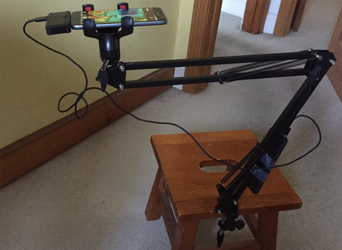
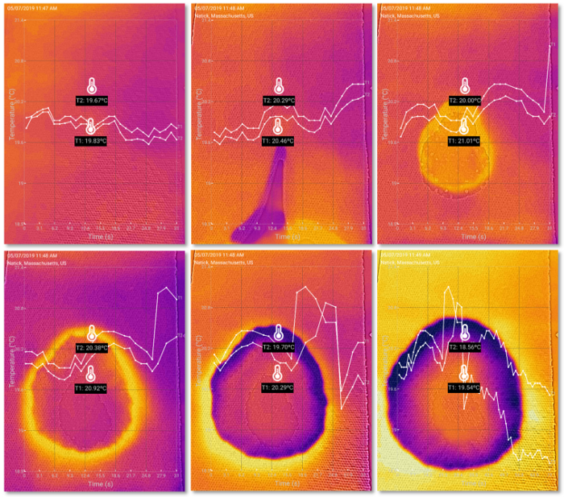
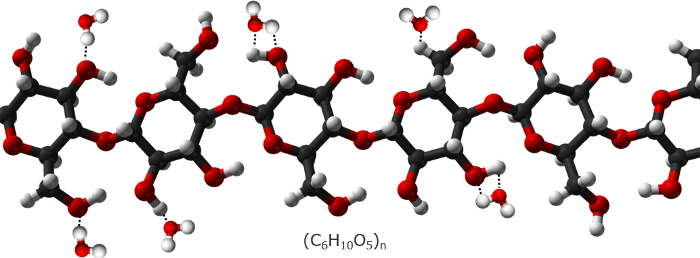
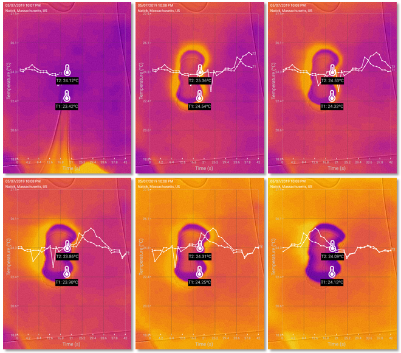

What Really Happens When a Water Droplet Falls on a Piece of Paper?
By Charles Xie ✉
Back to Infrared Explorer home page
Listen to a podcast about this article
What do you think the temperature of a piece of dry paper will change when a water drop falls onto it? Here we are not talking about a drop of hot water or ice water. We are talking about a drop of water that has reached some sort of equilibrium with the room. As we know, due to the effect of evaporative cooling, water in an open container is typically cooler than the room temperature by 1–2°C, depending on the relative humidity.
Many people might think the temperature would fall a little bit due to the cooler water drop. However, things are not always what they seem. A thermal camera reveals that the chemistry between a piece of paper and a drop of water is actually non-trivial. I accidentally observed this interesting hydration reaction back in 2011 when I was playing with a FLIR I5, which costed about $2,000 back then. In this article, I revisit this topic with the Infrared Explorer powered by the $200 FLIR ONE thermal camera.
Experimental setup
If you already have a thermal camera, this experiment requires nothing but paper and water. To make it easier, I recommend using a rubber bulb syringe or a pipette to control the amount of water added to dry paper. My thermal camera was attached to a smartphone, which was then secured at an adjustable mount that has a bracket and two arms as shown below. For less than 20 bucks, the mount system is perfect for imaging bench experiments.

A thermal camera mounting system for bench experiments.
Water drops on porous paper
I first used a piece of paper towel as it is a good absorber of water. The following series of thermal images shows the temperature changes in about two minutes. As water diffused rapidly through the porous structure of the paper towel, the edge of the wet area at which dry paper first encountered water expanded. The most striking feature of the thermal images is that this edge stood out as a “halo” of heat as it spread. This effect was in stark contrast with the rest of the wet area that cooled down as a result of water evaporation. What is even more surprising is that the central part of the wet area appeared to be slightly warmer than the rest at the end. The data captured by the thermometers showed that the temperatures initially jumped when water was added, then fell, and then bounced back a bit before they went down again. You can click the link below the following images to view and analyze a recorded experiment on your own.

Thermal imaging shows complex thermodynamics of a water drop reacting with a piece of paper towel
Click HERE for a recorded experiment
How do we explain all these?
The explanation of this effect requires some chemistry. Paper is mostly made of cellulose, a long polysaccharide chain of numerous glucose units. The hydrogen and oxygen atoms of cellulose provide a lot of potential donors and acceptors for making hydrogen bonds with water molecules. Hydrogen bonds are not as strong as covalent bonds. When a hydrogen bond forms, it releases approximately 5 kcal/mol, which is a small fraction of the energy released by the formation of a covalent bond. That energy, however, is enough to cause a temporary temperature spike that shows up in the thermal images.

Hydrogen bonds between water and cellulose molecules.
Once all the cellulose molecules fully soak up with water, the warming effect due to the hydration reaction stops and the cooling effect due to the evaporation of water dominates, causing the wet area to appear blueish under the thermal camera.
The “orange island in the blue sea” that emerged at the end is quite baffling. My theory is that that portion of the wet area might have stuck to the surface of the table. This reduced the evaporation of water molecules from two sides of the paper to only one side, weakening the cooling effect.
The following video recorded the process:
Water drops on regular paper
I also tested the effect with regular paper and the results were similar, as shown in the following images.

The imaging results with regular paper.
Conclusion
Who would have thought that a humble piece of paper under a thermal camera can teach us so much science? Thermal cameras can be new additions to science labs that extend our perception, just like microscopes for biology. Unlike microscopes, thermal cameras can be used in nearly all disciplines. In principle, any process that leaves a trace of heat leaves a trace of itself under a thermal camera. Why not equip every school with this power now that it is in fact quite affordable?